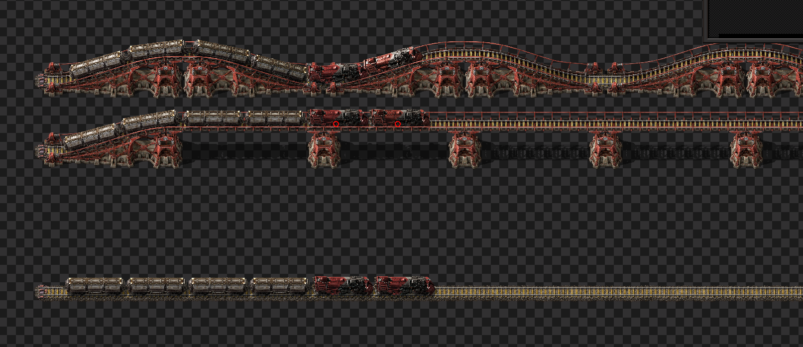

Ramps are better, elevated straight rails had no significant difference
Test consists of a bunch of trains cloned many times. On each of the railways, we use the following:
Benchmark was ran with 5 runs, for a total of 1750 ticks a piece (longer than it takes to reach the end of the track) 
| Metric | Description |
|---|---|
| Mean UPS | Updates per second - higher is better |
| Mean Avg (ms) | Average frame time - lower is better |
| Mean Min (ms) | Minimum frame time - lower is better |
| Mean Max (ms) | Maximum frame time - lower is better |
| Save | Avg (ms) | Min (ms) | Max (ms) | UPS | Execution Time (ms) | % Difference from base |
|---|---|---|---|---|---|---|
| test-000062.elevated_rail | 0.892 | 0.138 | 11.572 | 1121 | 7805 | 0.00% |
| test-000062.standard_rail_sparsed | 0.882 | 0.170 | 10.172 | 1134 | 7714 | 1.19% |
| test-000062.standard_rail | 0.865 | 0.174 | 10.687 | 1155 | 7569 | 3.11% |
| test-000062.just_ramps | 0.814 | 0.180 | 5.241 | 1229 | 7120 | 9.68% |
Surprisingly, just using ramps was better than the other options. The suspected reason for this is that there are fewer entities. Each ramp covers the distance of 8 normal pieces of rail. This should in theory lead to fewer entities to process as the train makes its collision checks.
There was not any significant difference between elevated rails and normal straight rails.